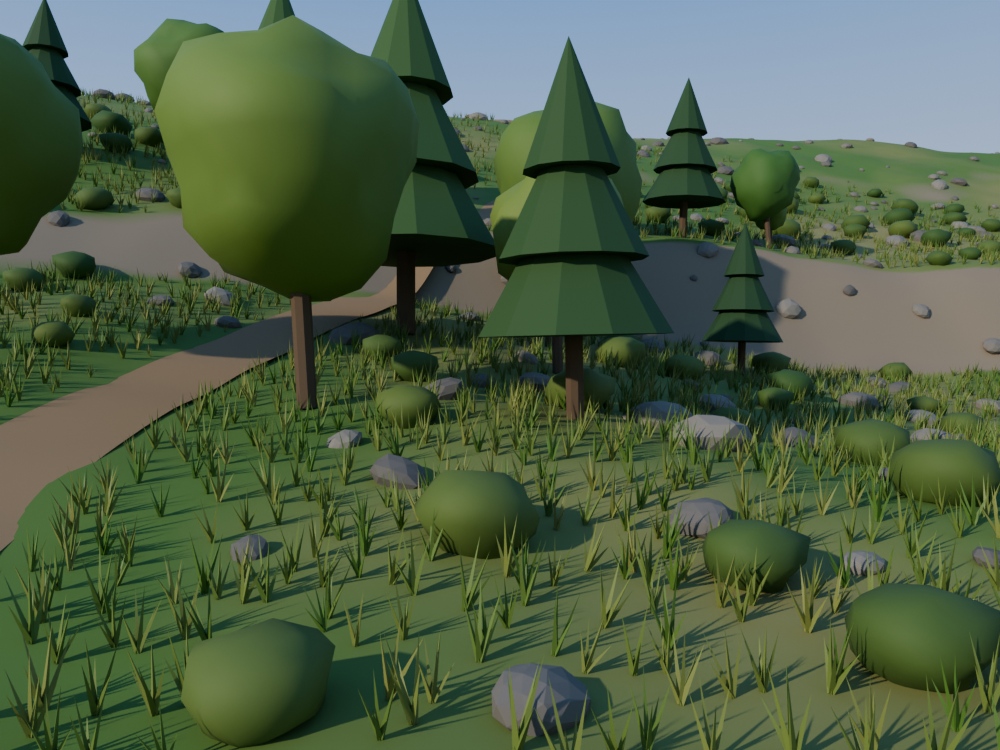
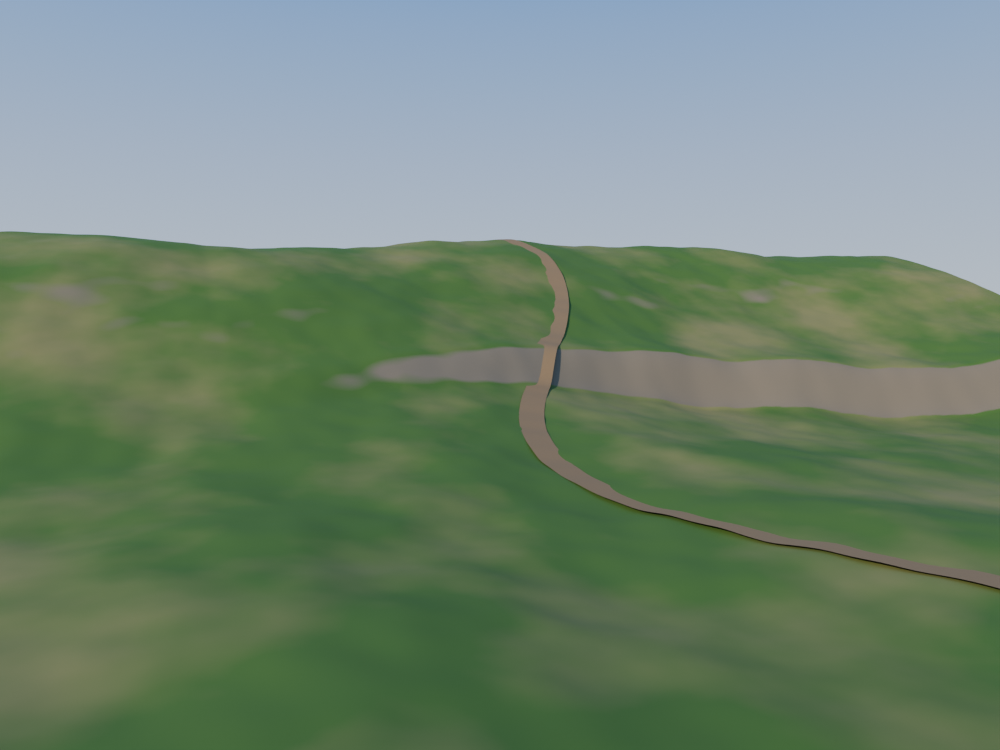
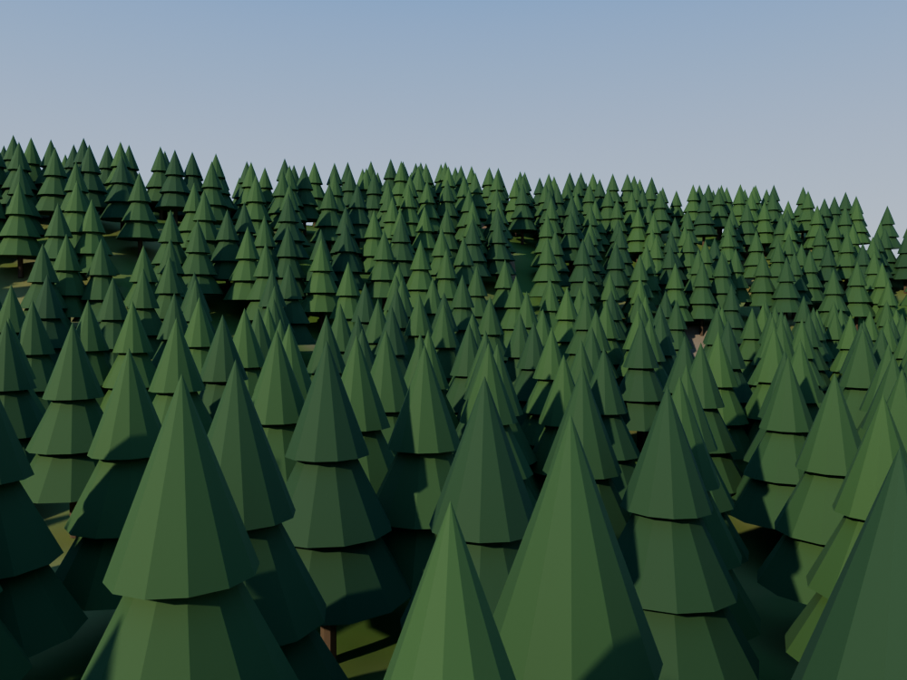
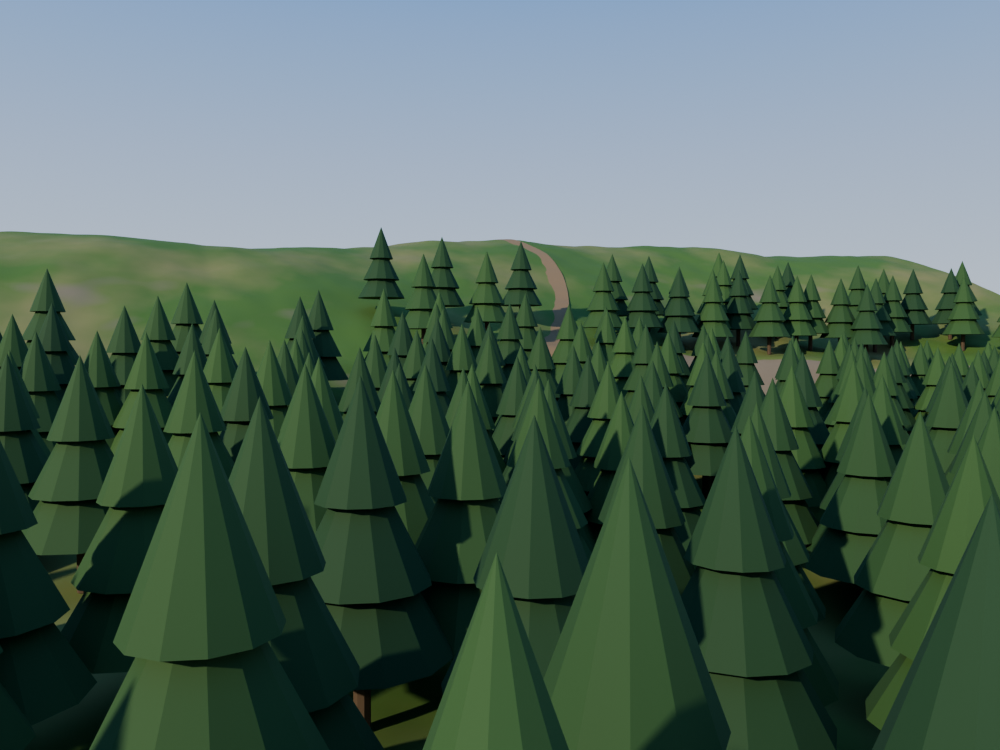
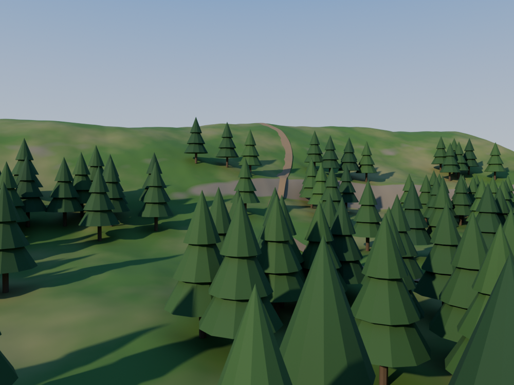
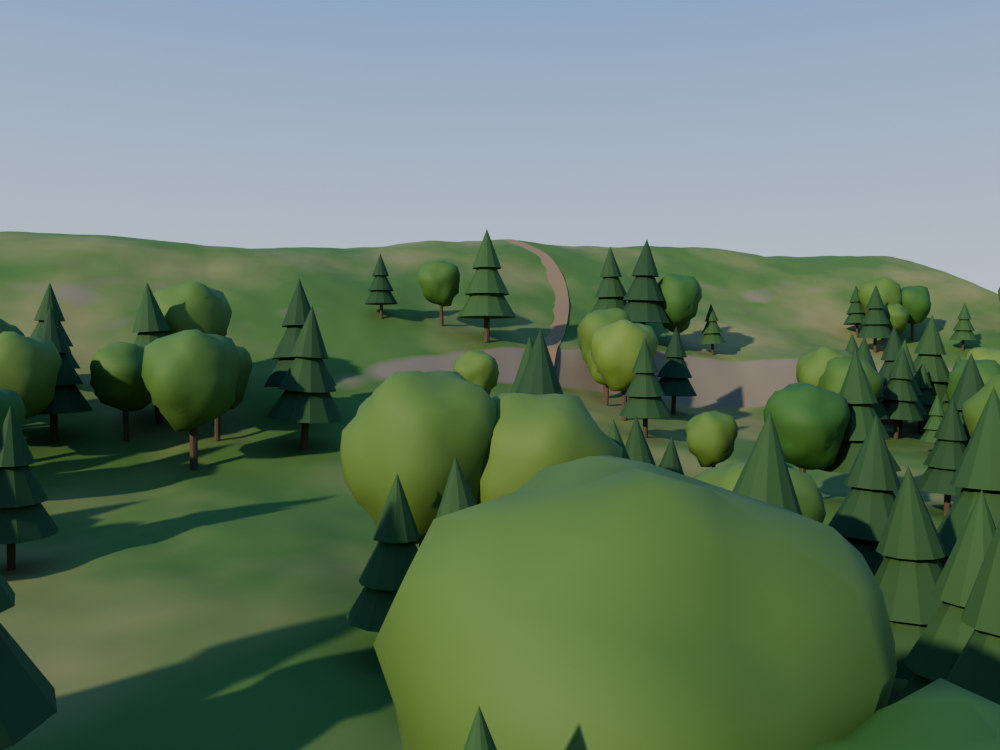
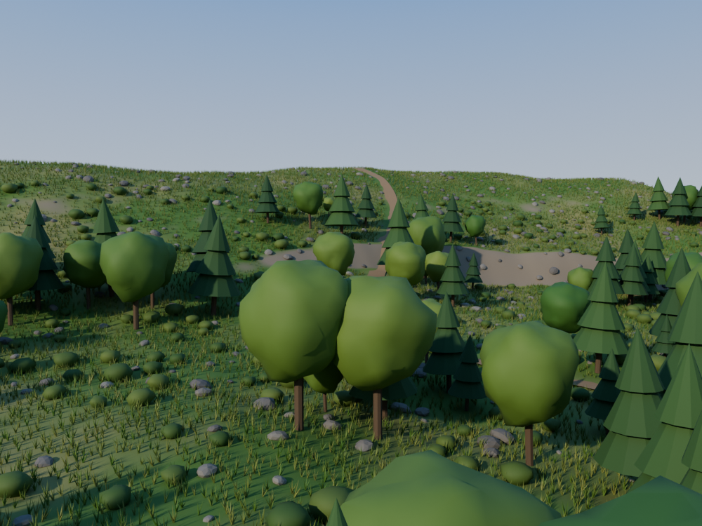
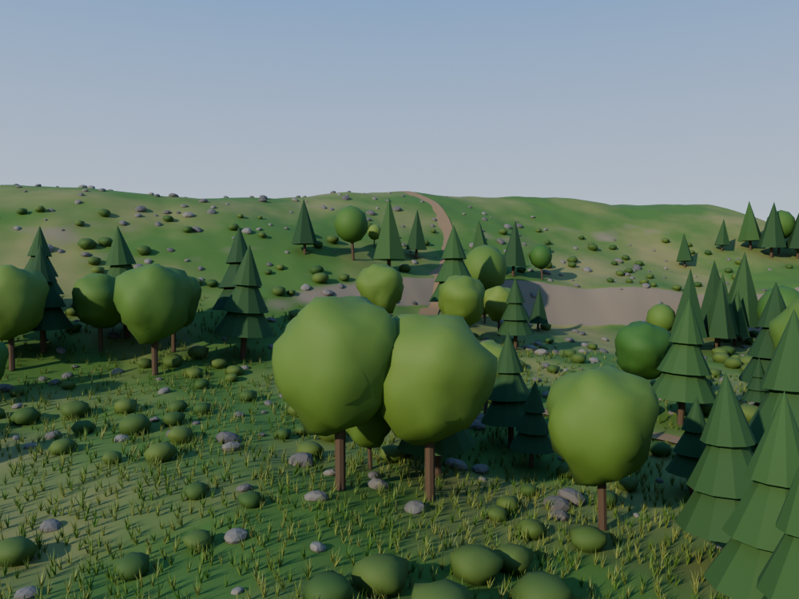
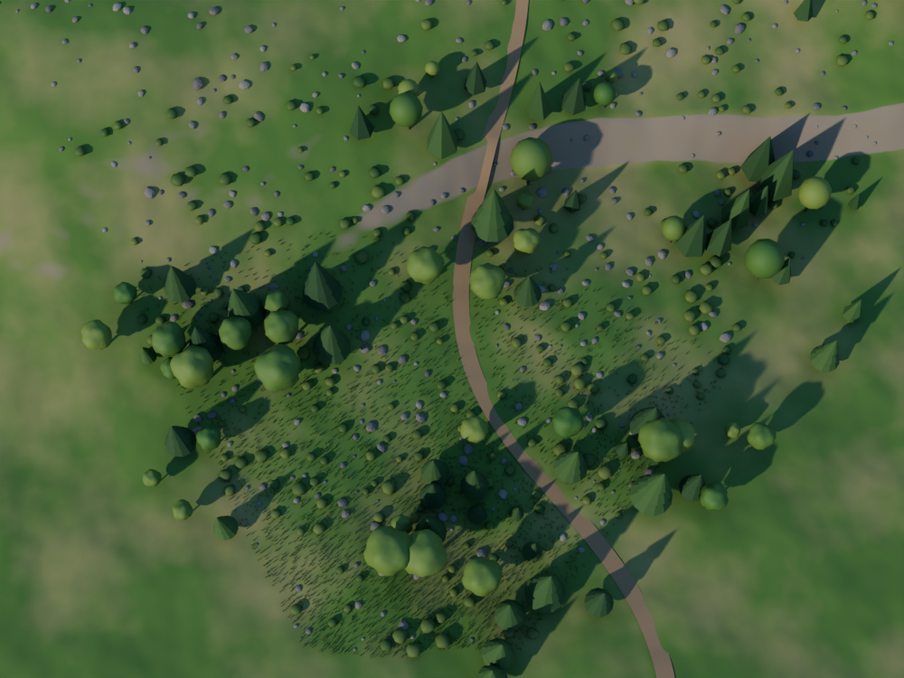

Products › BaseNode Packs › Scatter & Biomes › Tutorial: Forest edge
Forest edge
A hillside with a path up it: pines and round trees in groves on the gentle slopes, glades between them, bushes at their feet, rocks on the steep bank, grass wherever the others leave room, and nothing on the path. Nothing is placed by hand. Rules decide where each thing grows, and the camera decides what is worth keeping.

You will learn
- The craft. Scatter as a procedural content generator does it: points by density with Poisson-disk spacing, kept by slope, altitude, distance to a path and a noise, soft at their edges; instances turned and sized at random for a seed; layers that keep off one another; then only what the camera sees, simpler far away.
- The language.
useto bring in a module, a module's graph called with only the inputs that matter (the others keep their defaults), its tuple of outputs read by name (t.points,t.instances), frames to group a long graph, and anObjectinput that the modifier fills in.
This page goes faster on the basics than Lunar ground, which starts from a flat square: a noise, SetPosition, a material. Read it first if those are new to you.
Before you start
You need Blender 5, the Base Node add-on, and the Scatter & Biomes pack, version 0.13.1 or later. The pack is sold by the author of Base Node, apart from the open source project: the steps below are free to read, copy and change; the modules they use are not.
The hillside, the path and the trees, bushes, rocks and grass are made with plain nodes, in the step files themselves.
| Module | Kind | What it gives |
|---|---|---|
scatter | geometry | scatter: points by density and spacing where its rules allow (slope, altitude, attribute, distance to paths, noise), each storing how far inside the rules it is; place_instances: an instance on each, aligned, spun, tilted and sized for a seed; avoid: a layer kept off another. |
biomes | geometry | biome_layer: one layer in one node, from its rules to what the camera sees; lod and frustum_cull for the camera; camera_view to read one; biome: four layers from four collections. |
Every block below is a complete .bn file, its code beside the nodes it builds. Two ways to try a step:
- Drag it. Drag the file icon of its block, or its title, onto empty space in Blender's 3D Viewport, and keep Instantiate the Example: a new object carries
forest_edgeat the 3D cursor. A click on the file icon downloads the file instead. - Paste it. Press the copy button of its block, open a Geometry Node editor, press Ctrl+Shift+V and pick Add as Modifier, on any mesh object: the graph makes its own hillside and ignores the mesh it is given.
The pictures are rendered from these exact files by render.py, with the same camera, sun and sky, except where a caption says otherwise. The hillside is 180 m wide; the camera stands at its foot, 11 m up.
1. A hillside and a path
Something to scatter on. A grid 180 m wide, a point every 50 cm, lifted by hill_height; a path that winds up it, as a curve laid on the same heights.
step1_hillside.bn: forest_edge, hill_height, hill_path, meadow
hill_heightadds three things: a hill whose crest is 40 m away, a bank that rises 5 m in 6 m across it, and hummocks of noise. The bank is there for the rules of step 3: it is too steep for trees.hill_pathis a curve, not a mesh: the scatter keeps away from curves (step 4). Its points take their height fromhill_height(xy), the same graph as the ground, so it lies on it.CurveToMeshonly gives it a body to render.- The material shows bare earth where the ground is steeper than about 32°: the bank.

2. Trees by density and spacing
use scatter brings in the module. Its scatter puts points on the faces of a mesh, so many per square metre, and removes those closer than spacing to another: a Poisson disk. A pine on each point, and the hillside is planted.
step2_scatter.bn: forest_edge, pine
- Why a spacing. Random points clump: some trees would stand in each other's trunks while gaps open elsewhere. A minimum distance is what real trees keep, each one shading the ground around it.
- Density and spacing work together. 0.06 per square metre would be 1,944 trees on 32,400 m²; with no two closer than 3 m, 1,135 are left. A larger spacing lowers the density you get; it never raises it.
seedis an input of the graph: another seed, another forest, everything else the same.

3. Kept by slope and altitude
Trees do not root on a steep bank, and they stop below the top of a windy hill. Two rules of scatter say so, in the same call: slope_max and altitude_max.
step3_rules.bn: forest_edge
slope_max: 0.47, in radians: 27°. The slope is the angle of the ground's normal from up, so flat ground is 0.altitude_max: tree_line: a new input of the graph, 17 m. Change it on the modifier and the forest climbs or retreats.- Why soft. A rule is not a wall. Each one is 1 inside, falls to 0 at its edge over its softness (here 0.1 rad and 4 m), and the rules multiply into a mask stored on each point,
scatter_mask.thinning: 1.0keeps a point with the chance of its mask: the trees thin out toward the tree line instead of stopping on a contour line.

4. A clear path, and glades
Two more rules. paths takes the curve of the path and keeps the trees clearance away from it. noise breaks the forest into groves with glades between them: an even forest looks planted.
step4_clearings.bn: forest_edge
clearance: 3.0,falloff: 4.0: nothing within 3 m of the path, then fewer trees for 4 m. A path through a wood is lined by the trees it was cut through, not by a hedge.pathsis any geometry: curves, the edges of a mesh, points. A river, a road, the footprint of a house all work the same.noise_size: 25.0,coverage: 0.7: groves about 25 m wide over 70 % of the ground. The noise is fixed for a seed, so the glades stay where they are when you change another rule.

5. No two trees alike
Every tree is still the same pine, the same way round, the same size. place_instances replaces InstanceOnPoints: it picks one of several trees, turns it and sizes it, at random for the seed.
step5_variety.bn: forest_edge, broadleaf
GeometryToInstance(pine(), pine(), broadleaf()): three instances to pick from, so two pines for a round tree.pick_instance: truepicks one for each point.align: 0.0: trees grow toward the sky whatever the slope. Rocks will takealign: 1.0, laid along the ground.edge_scale: 0.5: a tree is up to half its size smaller where its mask is low. The edge of a grove is young trees, and the soft rules of steps 3 and 4 are what tellplace_instanceswhere that edge is.- Why it stays put. Each point keeps its
idfrom where it was scattered. Raise the tree line: new trees appear above, and none of the others moves or turns; only those that were at the edge grow, being no longer at it.

6. Four layers that keep off one another
A forest edge is more than trees. use biomes brings in biome_layer: a scatter, an avoid and a place_instances in one node. Four of them, from the tallest to the smallest, each one kept off the layers before it.
step6_layers.bn: forest_edge, bush, rock, tuft
- Each layer its rules. Rocks take
slope_max: 1.3, 75°: they lie on the bank where nothing else holds. Bushes go 3 m above the tree line; grass up to the crest. - Why avoid, and in this order.
avoid: t.pointswithradius: 2.0keeps the bushes 2 m off the trunks; the rocks avoid trees and bushes; the grass avoids all three. Big things first: a rock may move for a tree, never the other way round. t.pointsare every point of the layer, before the camera has its say: the layers avoid each other the same wherever the camera is.thinning: 0.0: a layer thins out away from its camera, which is the origin until the next step gives it one. Here, no thinning.tagstores the layer on each instance,biome_layer, 1 to 4: the counts below are read from it.

7. What the camera sees
75,023 tufts of grass, most of them behind the camera or too far to be more than a pixel. The last step gives the layers a camera: an Object input of the graph, read by camera_view. Each layer then keeps only what that camera sees, and makes it simpler far away.
step7_view.bn: forest_edge, pine_proxy
- Level of detail. Past
lod_distance, a tree is itsproxy: one cone or one ball instead of three cones and a lumpy crown. The proxies are listed in the order of the trees, so a far pine stays a pine. - Thinning and culling by distance. From
lod_distancetocull_distancea layer thins out, down to1 - thinningof its points; past it, none. A tuft of grass is a few pixels at 25 m: by 80 m, it is gone. - View-frustum culling.
frustumdrops every point outside the camera's frame, widened bymargin. A point is tested, not the instance on it, so a tree whose foot is just out of frame would vanish while its crown should show: the trees takemargin: 0.5, half a frame more on each side. camera_viewreads the camera picked on the modifier, else the scene's active camera;eye.foundsays whether it found one.use_camera: eye.found: with no camera at all, a layer shows every point at full detail.viewport_only: false. By default a layer culls in the viewport only, and a render keeps every point, for its shadows and reflections. Here the render shows what the camera keeps.
| Layer | Step 6 | Step 7 | Kept |
|---|---|---|---|
| Trees | 257 | 140 | 54 % |
| Bushes | 990 | 251 | 25 % |
| Rocks | 1,858 | 421 | 23 % |
| Grass | 75,023 | 3,977 | 5 % |
| All | 78,128 | 4,789 | 6 % |


A culled point is gone for every render pass, its shadow too: a tree just out of the frame casts no shadow into it. Widen margin when long shadows come in from the side.
The knobs
Every layer has its inputs, on its node in the Geometry Node editor. A few worth turning:
| Where | Input | What it does |
|---|---|---|
forest_edge | seed | Another forest: every layer, its glades and its sizes change together. |
forest_edge | tree_line | How high the trees climb, and the bushes 3 m above them. |
forest_edge | camera | The camera the layers are culled for. Move it: what is kept follows. |
biome_layer | density, spacing | How many per square metre, and how close they may stand. |
biome_layer | slope_max, altitude_min, altitude_max | Where the layer may grow. |
biome_layer | clearance, noise, noise_size | How far from the path; how patchy, and in patches how wide. |
biome_layer | radius | How far it keeps from the layers in its avoid. |
biome_layer | lod_distance, cull_distance, thinning, margin | Where the proxies start, where the layer stops, how much it thins between, how far past the frame it reaches. |
Try: on step 7, set tree_line of forest_edge to 30: the trees climb to the crest and none below moves. Then set radius of the bushes to 0: they crowd against the trunks.
To scatter on your own terrain, use your mesh instead of ground and your curves instead of path: the layers stay as they are. Mind the scale: densities are per square metre and distances in metres, so a terrain modelled at another scale needs them scaled too. For four collections instead of meshes made in the file, biome does the four layers of this step in one node.
Take it to Blender
The finished forest edge, in one file. Drag the card onto empty space in Blender's 3D Viewport and keep Instantiate the Example: a new object carries forest_edge. Pick your scene camera in its camera input. A click on the card downloads the file.
The steps before it, to start again from any of them:
The files, with the script that renders this page's pictures, are in examples/tutorials/forest_edge/.